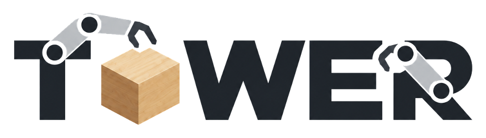
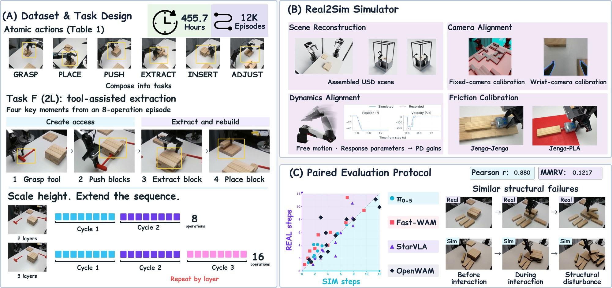
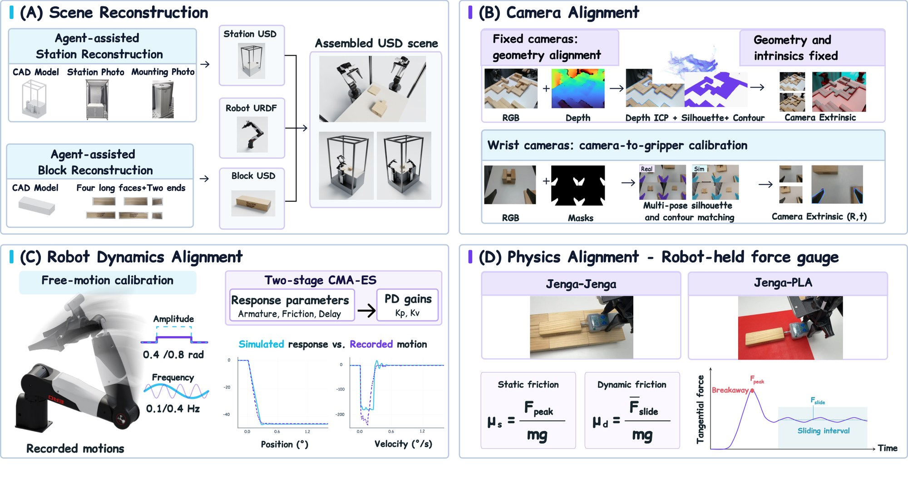
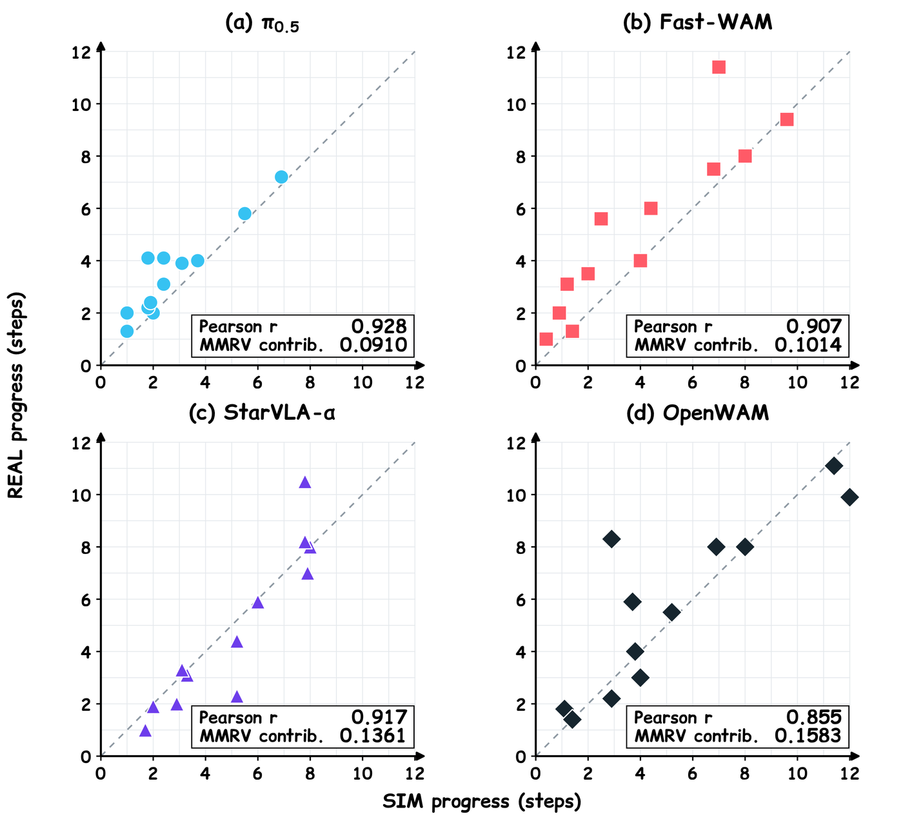

Finding 1
Progress reveals partial completion.
The 31 settings with no successful episode still span 11.9–77.5% LHPR. Fast-WAM completes 3.1 of four operations on average on REAL Task D (3 layers) while failing all ten episodes.

: Benchmarking Bimanual Manipulation across Simulation and Reality*Equal contribution†Project leader‡Corresponding authors
Abstract
Complex robotic manipulation requires interpreting visual scenes and anticipating how actions change object contacts and structural support. Evaluating these capabilities calls for diverse, long-horizon tasks in which the physical consequences of earlier actions shape subsequent execution. To this end, we introduce TOWER, a novel Jenga-based benchmark for sustained contact and structural change, comprising six configurable task families involving bimanual coordination and tool use. Jenga provides repeatable structures in which local manipulations alter the support and stability needed for subsequent actions. A Real2Sim pipeline builds corresponding simulated environments for scalable evaluation. We evaluate four policy architectures across twelve configurations using separately trained real and simulated policies. Progress metrics reveal substantial partial completion hidden by binary task success, while taller configurations generally exhibit lower progress. Real–sim evaluation shows strong progress correlation (Pearson r = 0.880) and a normalized MMRV of 0.1217. TOWER provides a unified testbed for studying how policies respond to interaction-induced scene changes and supports systematic policy evaluation across reality and simulation.

Task suite
Easy tasks relocate blocks, medium tasks extract or insert, and hard tasks add tool use and reconstruction. Choose a cinematic simulation demo or a real-world recording. Cinematic clips show three layers; real recordings cover both heights.
Simulation · 3 layers · scripted demonstration · edited recorded-state replay; speed labeled in each shot.
Task A · Easy
Blocks are transferred one by one to rebuild the cross-oriented tower on a new base.
Real2Sim
Scene reconstruction, camera alignment, robot dynamics alignment, and physics alignment build the simulated counterpart used for the shared task suite, with held-out checks for camera and robot-response alignment.

Station CAD, photographs, and measured block dimensions and mass define the scene; an agent-assisted CAD-to-SimReady workflow builds the assets.
Point-to-plane ICP and silhouette, contour, and depth losses align the static camera view; wrist cameras are calibrated to the gripper from multi-pose silhouettes.
Two-stage CMA-ES fits response parameters, command delay, and PD gains. Held-out position RMSE falls by 28.0% and 18.5% (left and back arms); velocity RMSE by 45.2% and 51.1%.
A robot-held force gauge measures breakaway and sliding friction. Block coefficients of 0.551 static and 0.263 dynamic are applied in SIM.
Evaluation
Two VLAs (π0.5, StarVLA-α) and two WAMs (Fast-WAM, OpenWAM) are trained separately on REAL and SIM demonstrations and evaluated in their own domain, with matched architectures, tasks, and scoring. Each setting runs ten episodes per domain: 960 episodes in total.
Finding 1
The 31 settings with no successful episode still span 11.9–77.5% LHPR. Fast-WAM completes 3.1 of four operations on average on REAL Task D (3 layers) while failing all ten episodes.
Finding 2
Mean LHPR falls from 79.62% to 63.19% from two to three layers, with decreases in five of six tasks. B, E, and F drop by 27.50, 33.54, and 28.59 points.
Finding 3
Across 48 paired settings, Pearson r = 0.880 with a mean absolute gap of 0.994 successful operations per episode; normalized MMRV is 0.1217.
Every policy on every task. Values from Appendix Tables 17–18; each mark is a ten-episode result.
Mean successful operations per episode in each domain for the 48 paired settings: the coordinates of Figure 4, from Appendix Tables 19–20.

Resources
Open-source evaluation tools and reproducibility resources.
Installation, benchmark execution, and evaluation guidance.
600 raw HDF5 episodes across all 12 task configurations, with 50 per configuration.
Assets for the released simulation benchmark.
Explore the challenge website.
The public dataset provides 600 raw simulation demonstrations, a subset of the paper’s 12,000 SIM/REAL demonstrations. Model-specific preprocessing is left to users. Simulator assets are available separately; real-world demonstrations are not included in this dataset release.
@misc{tower2026,
title = {TOWER: Benchmarking Bimanual Manipulation across Simulation and Reality},
author = {Mak, Chak-Wing and Yang, Zewen and Zhang, Xiaojie and Zhu, Guanyu and Rui, Yuhan and Wang, Yu-Kai and Nie, Zijie and Tang, Kai and Wu, Yinyu and Fu, Chuyao and Tseng, Cheng-Ching and Ge, Kuangzhi and Gao, Shengjie and Zhang, Kevin and Chi, Xiaowei and Guo, Yike and Han, Sirui and Zhang, Shanghang},
year = {2026},
url = {https://tower-benchmark.com}
}